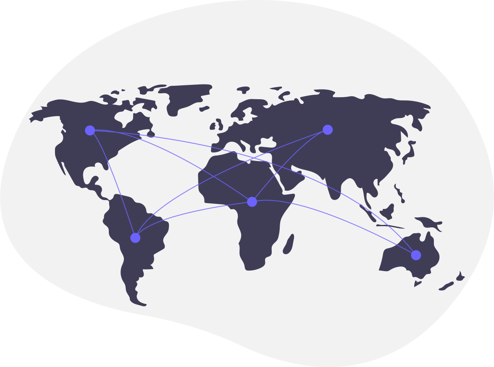
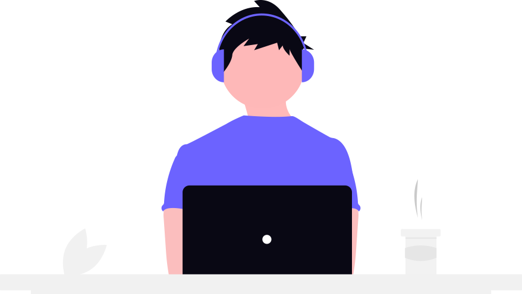

Front-End Developer
Hi, I'm Fellype.
As a Front-End Developer, I focus on learning and building software for Web Systems with responsive, intuitive, visually appealing user interfaces.

About Me
Currently in Front-End applications development, planning to become a Full-Stack with a international career creating high-performance and efficient softwares for each platform.
Highly interested in expanding my knowledge and working across a range of technologies including Desktop, Front-End, Back-End, Mobile and even Games, to solve complex problems continuously improving my skills.
I'm either at Technical Program in Systems Analysis and Development.

